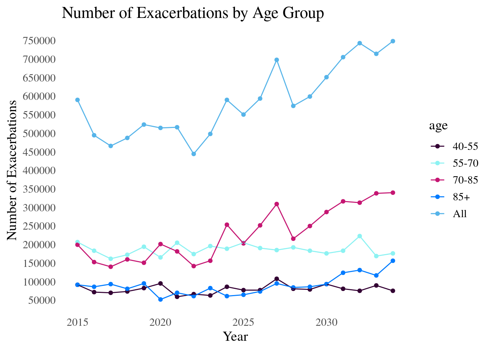
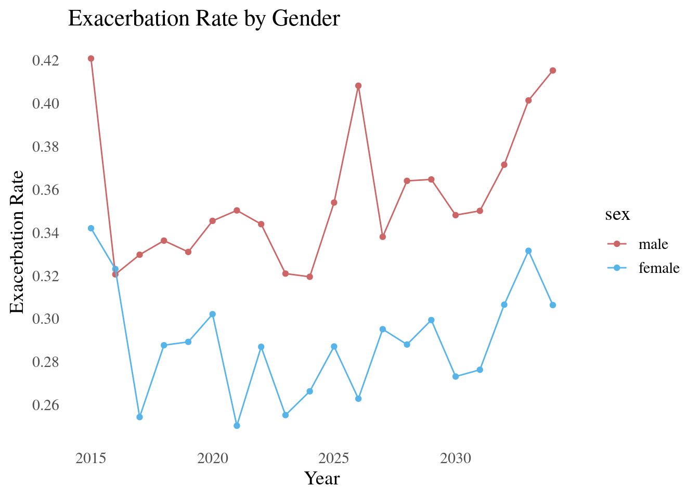
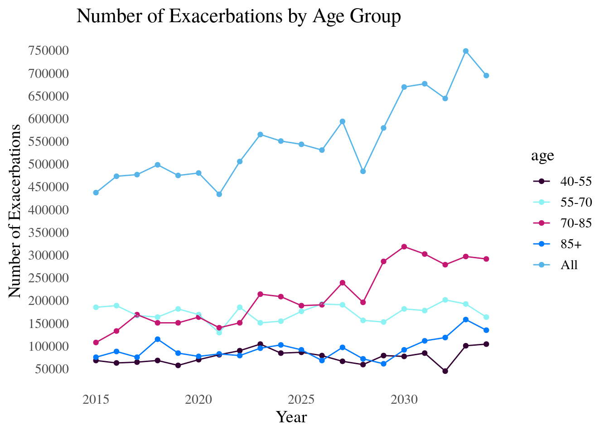
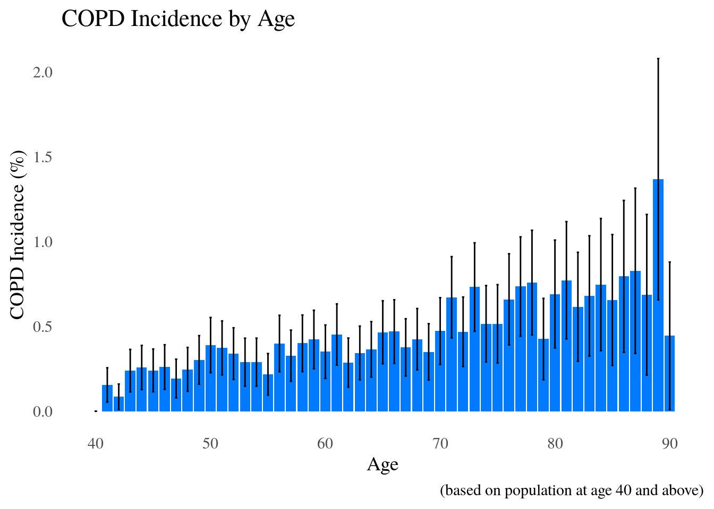
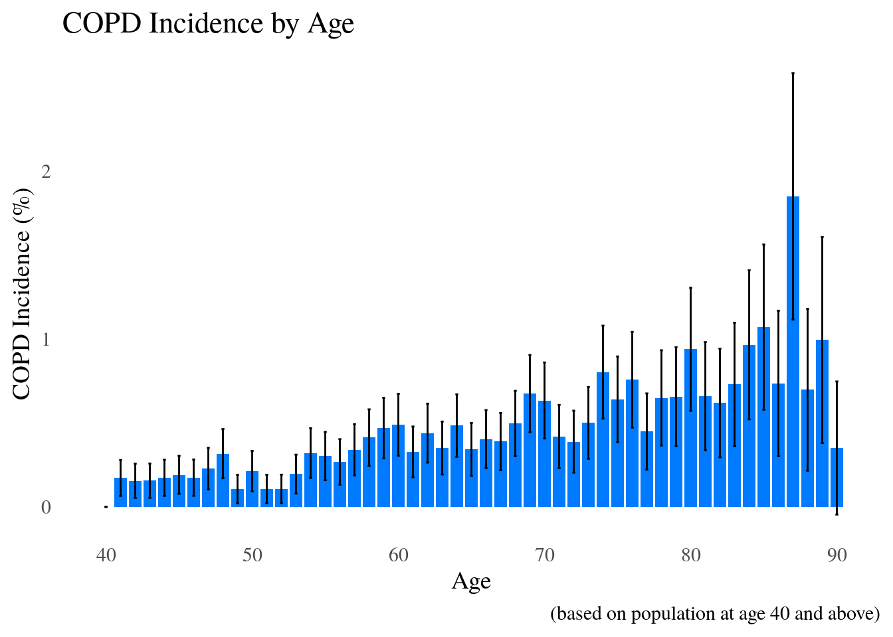
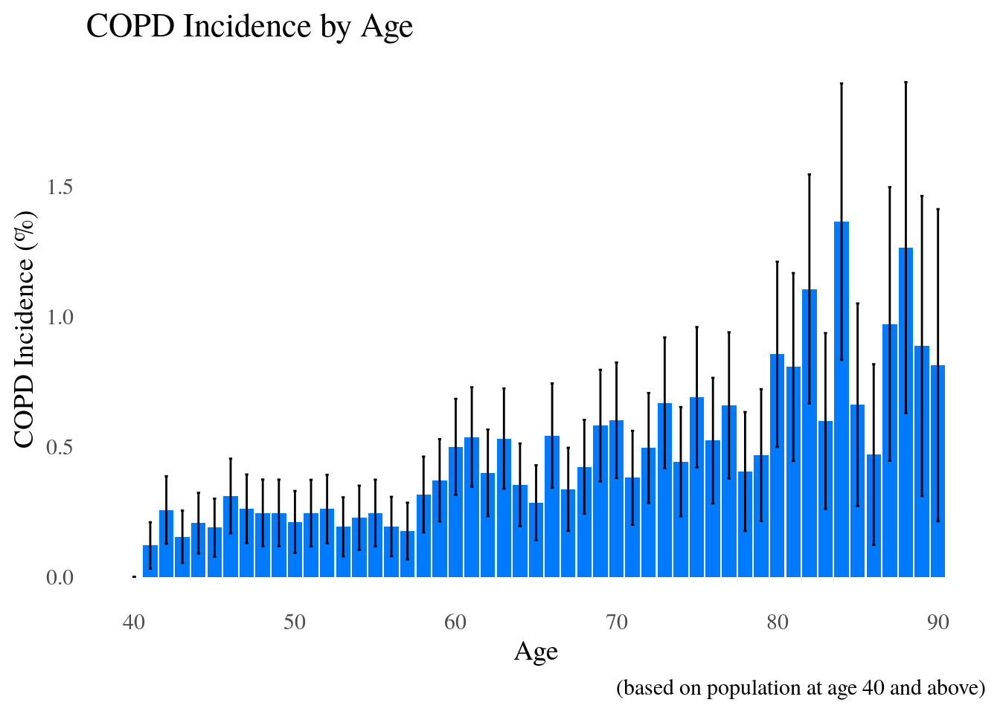
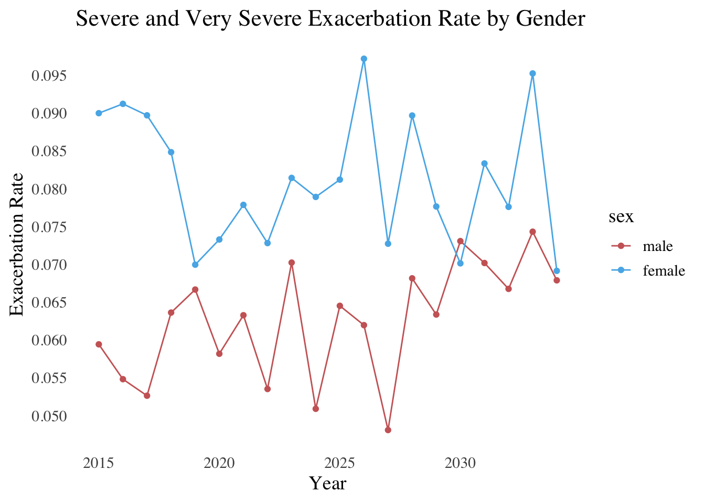

3 Using the Package in R
3.1 Installation
If you do not have R installed on your computer, please go to Appendix 1. Once you have R installed, you can install the epicR package as per the instructions below:
Windows 7 or Later
- Download and Install the latest version of R from https://cran.r-project.org/bin/windows/base/
- Download and Install R Studio from https://www.rstudio.com/products/rstudio/download/
- Download and Install the latest version of Rtools from https://cran.r-project.org/bin/windows/Rtools/
- Using either an R session in Terminal or in R Studio, install the package
devtools:
- Install epicR from GitHub:
Mac OS Sierra and Later
- Download and Install the latest version of R from https://cran.r-project.org/bin/macosx/
- Download and Install R Studio from https://www.rstudio.com/products/rstudio/download/
- Install homebrew from https://brew.sh and Xcode developer tools from the App store.
Note: Xcode is quite a large file, and needs about 20 GB of storage space to install. The whole process takes about an hour.
- Open the Terminal and use brew to install
llvm:
- Add the following to your
~/.bash_profile:
And this to your ~/.Rprofile:
- Using either an R session in Terminal or in R Studio, install the package
devtools:
- Install epicR from GitHub:
Note: If epicR is still not compiling correctly, gfortran needs to be installed separately. In the terminal:
Now, by default, R does not look for the HomeBrew version of gcc, so you will need to change this as well. First, you need to find the version of gcc you are using:
The first number is {YOUR_GCC_MAIN_VERSION}, and the whole name is {YOUR_GCC_FULL_VERSION}. For example, on my computer, it is:
9.1.0You will also need the folder name for your gcc, which you will need to log in as sudo to do:
The folder name printed out is {YOUR_GCC_TARGET}. For example, on my computer, it is:
x86_64-apple-darwin18In terminal, use your favourite text editor to open the file “~/.R/Makevars”:
This may open a blank file, or it might have some content already. Somewhere in the file, add the following:
CC = gcc-{YOUR_GCC_MAIN_VERSION}
CXX = g++-{YOUR_GCC_MAIN_VERSION}
FLIBS = -L/usr/local/lib/gcc/{YOUR_GCC_MAIN_VERSION}/gcc/{YOUR_GCC_TARGET}/{YOUR_GCC_FULL_VERSION}
-L/usr/local/lib/gcc/{YOUR_GCC_MAIN_VERSION} -lgfortran -lquadmath -lmFor example, on my computer it would be:
CC = gcc-9
CXX = g++-9
FLIBS = -L/usr/local/lib/gcc/9/gcc/x86_64-apple-darwin18/9.1.0
-L/usr/local/lib/gcc/9 -lgfortran -lquadmath -lmOnce you have done this, save the file and close the text editor. You may need to restart RStudio, and try Step 7 again.
Ubuntu 16.04 and Later
Install R if you don’t have it installed already. See Appendix 1 for installation guide.
- Download and Install R Studio from https://www.rstudio.com/products/rstudio/download/
Install
libcurlfrom Terminal:
- Using either an R session in Terminal or in R Studio, install the package
devtools:
- Install epicR from GitHub:
3.2 Running the Model
Now that you have installed epicR, you can load the library:
Step 1: Initialize the Session
The backend of this package is in C++. In other languages such as R/Python, memory allocation is taken care of for you. However, in C/C++, you need to allocate memory yourself. You also need to deallocate memory when the program is done. Because of this, we have the function init_session().
init_session() is in the core.R file, and calls 3 C functions: Cdeallocate_resources(),
Callocate_resources(), and Cinit_session(). You don’t really need to know how these work, but basically they allocate/deallocate memory.
You need to call this before you run anything:
In C++, a program that is successful returns 0, so you should see this in the R console.
Step 2: Set the Inputs
If you want to set your own input parameters, I will explain how to do so in this section. If you want to use the defaults, you can skip to the next step.
The default input values are created in the file input.R. To set your own input values, you can use the function createInput() in the file createInput.R. Below is a list of the parameters you can set:
To create the inputs:
Step 3: Run
The run() function has two arguments: max_n_agents and input. If you created your own input in Step 2, you can put it in here; otherwise, you can leave the input argument blank. The max_n_agents argument is how many people you want in your model. The default is set to the maximum integer your computer will allow. On my computer that is 2147483647. You can set this to a lower number if you like (it might run faster).
If you want to change the arguments:
Otherwise:
Step 4: Results
Once you have run the model simulation, there are several functions to access the results. The first function is the
get_all_events() function. This function returns the events matrix, with every event for every patient. As you may guess,
this matrix can be quite large, depending on how many patients you ran the model with.
The other two functions are getExResults() and getMainResults().
Both functions return quite a long list of results, and as this package is in continuous development, I will refer you to the documentation in the R package for more details of how these functions work:
3.3 Figures
We have created some figures and charts for users, although they are not exhaustive, so you may want to create your own figures as well.
Exacerbation Charts
To look at total number of exacerbations and exacerbation rate, we have the function plotExacerbations().
We can look at total number of exacerbations by age group:
plotExacerbations(nPatients = 1e4,
argX = "year",
argY = "number_of_exacerbations",
groupBy = "age",
exacType = "all",
perCapita = NULL)
> Initializing the session
> [1] 0
> [1] 0
> Terminating the session
We can also look at the exacerbation rate by sex:
plotExacerbations(nPatients = 1e4,
argX = "year",
argY = "exacerbation_rate",
groupBy = "sex",
exacType = "all",
perCapita = NULL)
> Initializing the session
> [1] 0
> [1] 0
> Terminating the session
plotExacerbations(nPatients = 1e4,
argX = "year",
argY = "exacerbation_rate",
groupBy = "sex",
exacType = "severe",
perCapita = NULL)
> Initializing the session
> [1] 0
> [1] 0
> Terminating the session
COPD Occurrence Charts
To look at COPD incidence and prevalence, we have the function plotCOPD().
We can look at COPD incidence by age:
plotCOPD(10000, argX="age", argY="incidence", aggregateBy="none", groupBy="none")
> Initializing the session
> [1] 0
> [1] 0
> Terminating the session
We can look at COPD incidence by age group:
plotCOPD(10000, argX="age", argY="incidence", aggregateBy="age", groupBy="none")
> Initializing the session
> [1] 0
> [1] 0
> Terminating the session
We can look at COPD incidence by year and sex:
plotCOPD(10000, argX="year", argY="incidence", aggregateBy="none", groupBy="sex")
> Initializing the session
> [1] 0
> [1] 0
> Terminating the session
> No id variables; using all as measure variables
> No id variables; using all as measure variables
We can also look at COPD prevalence by age:
plotCOPD(10000, argX="age", argY="prevalence", aggregateBy="none", groupBy="none")
> Initializing the session
> [1] 0
> [1] 0
> Terminating the session